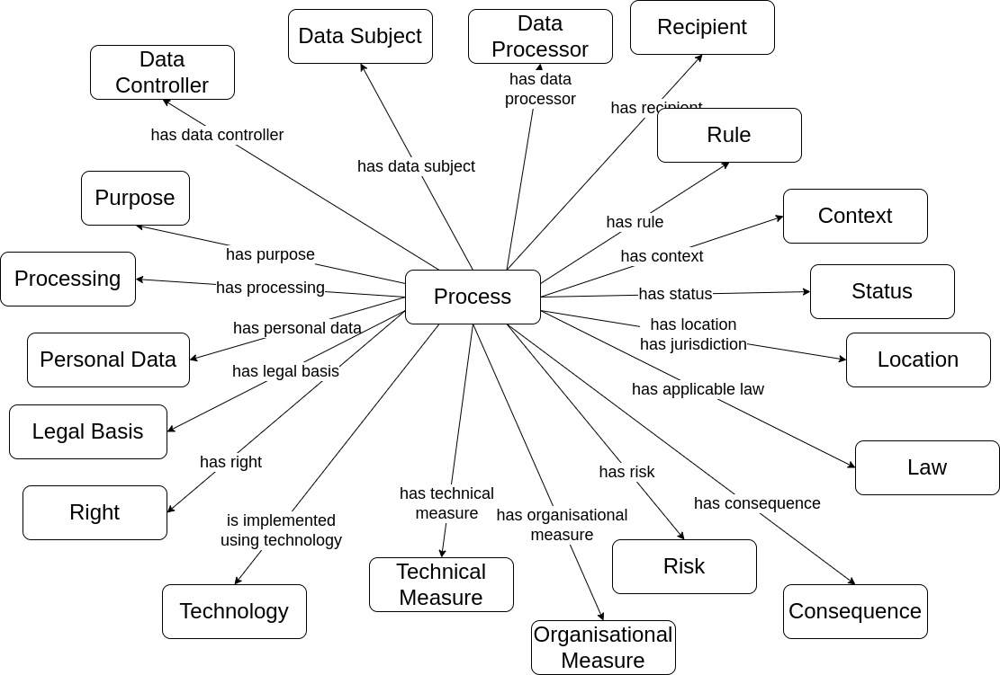

The Data Privacy Vocabulary [[DPV]] enables expressing machine-readable metadata about the use and processing of personal data based on legislative requirements such as the General Data Protection Regulation [[GDPR]]. This document describes the DPV specification along with its data model.
Contributing: The DPVCG welcomes participation to improve the DPV and associated resources, including expansion or refinement of concepts, requesting information and applications, and addressing open issues. See contributing page for further information.
DPV Family of Documents
[[[PRIMER]]]: An introductory document for DPV's concepts and taxonomies.
Newcomers to the DPV are strongly recommended to first read through the Primer to familiarise themselves with the semantics and concepts of DPV.
[[[DPV]]]: (this document) The base/core 'Data Privacy Vocabulary'
Extensions:
[[[PD]]]
[[[TECH]]]
[[[RISK]]]
[[[LOC]]]
[[[LEGAL]]] , with extensions for specific jurisdictions:
[[[LEGAL-EU]]] - with extensions for laws [[EU-GDPR]], [[EU-DGA]], and [[EU-RIGHTS]]
For a general overview of the Data Protection Vocabularies and Controls Community Group [[DPVCG]], its history, deliverables, and activities - refer to DPVCG Website.
The peer-reviewed article “Creating A Vocabulary for Data Privacy” presents a historical overview of the DPVCG, and describes the methodology and structure of the DPV along with describing its creation. An open-access version can be accessed here, here, and here.
Introduction
Semantics
This document assumes the reader is familiar with DPV through the [[[PRIMER]]], and thus focuses on providing a topically structured documentation of concepts defined by DPV.
DPV's terms are defined using [[RDFS]] & [[SKOS]] semantics where all 'classes' and 'properties' are defined as skos:Concept in addition to rdfs:Class and rdf:Property respectively. For taxonomies or hierarchies, concepts are defined as 'instances' of a top-concept, and relationships within the hierarchy are defined using skos:broader/skos:narrower. For example, [=Purpose=] is the top concept within the purposes taxonomy, and all purposes are instances of it. [=ServiceProvision=] is the purpose associated with 'service provision', and [=RequestedServiceProvision=] as a more specific purpose is associated with it using skos:broader.
[[OWL]] is an alternate serialisation of DPV where the same concepts are defined using [[OWL]] semantics for use with OWL-based reasoners. The conversion from SKOS to OWL follows the best practices and concerns outlined in [[[SKOS-OWL]]], e.g. by replacing skos:Concept with owl:Class, and using rdfs:subClassOf instead of skos:broader/skos:narrower.
DPV consists of certain 'core concepts' that are intended to be independent representations of specific information, and are distinct from other core concepts. For example, the [=Purpose=] refers only to the purpose of why personal data is processed and is independent as a concept from the other concepts (e.g. [=PersonalData=] or [=LegalBasis=]). The structuring of DPV is based on providing rich and comprehensive taxonomies that group concepts together based on each core concept, e.g. taxonomy of purposes, taxonomy of legal basis. 'Extensions' are a separate group of concepts that expand the 'core' vocabulary to represent specific information e.g. [[PD]] for personal data categories and [[RISK]] for risk management.
Core Vocabulary

Overview of concepts in DPV
The 'Core' concepts and relationships in DPV represent and associate relevant information regarding the what, how, where, who, why of personal data and its processing. These are:
Concept
Relation
[=PersonalData=]
[=hasPersonalData=]
[=Purpose=]
[=hasPurpose=]
[=Processing=]
[=hasProcessing=]
[=DataController=]
[=hasDataController=]
[=DataSubject=]
[=hasDataSubject=]
[=Recipient=]
[=hasRecipient=]
[=TechnicalOrganisationalMeasure=]
[=hasTechnicalOrganisationalMeasure=]
[=LegalBasis=]
[=hasLegalBasis=]
[=Right=]
[=hasRight=]
[=Risk=]
[=hasRisk=]
[=Context=]
[=hasContext=]
To 'group' these concepts together within a specific use-case, the concept [=Process=] and relation [=hasProcess=] are useful (the concept [=PersonalDataHandling=] was used in earlier versions for the same). For example, a 'process' about a specific application can represent the associated purposes, personal data, legal basis, etc. using the relations and provided taxonomies. For a detailed representation, the following specialisations of processes are provided to indicate e.g. the process is or is not expected to involve personal data:
dpv:NonPersonalDataProcess: An action, activity, or method involving non-personal data, and asserting that no personal data is involved
go to full definition
dpv:PersonalDataHandling: An abstract concept describing 'personal data handling'
go to full definition
dpv:PersonalDataProcess: An action, activity, or method involving personal data
go to full definition
Taxonomies
The rest of the document expands on the core concepts through the following taxonomies.
Risk & Impacts for risk assessment, management, and expression of consequences and impacts associated with processing.
Rights and Rights Exercise for specifying what rights are applicable, how they can be exercised, and how to provide information associated with rights.
Rules for expressing constraints, requirements, and other forms of rules that can specify or assist in interpreting what is permitted, prohibited, mandatory, etc.
Entities
Please refer to entities page for additional documentation, examples, references, and best practices. This document provides only a brief summary of the entities concepts.
DPV relies on existing well-founded interpretations for its concepts, which in this case relate to Entity as a generic universal concept and LegalEntity specifically referring to roles defined legally or within legal norms. Expanding on these, DPV provides a taxonomy of entities based on their application within laws and use-cases in the form of Legal roles, such as [=DataController=], [=DataSubject=], and [=Authority=]. Later, these concepts are expanded into taxonomies for different kinds of entities categorised under a common concept. For example, categories of Data Subjects such as [=Adult=], [=User=], or [=Employee=]; or kinds of Authorities, or categories of Organisations.
dpv:LegalEntity: A human or non-human 'thing' that constitutes as an entity and which is recognised and defined in law
go to full definition
Legal Role is the role taken on by a legal entity based on definitions or criterias from laws, regulations, or other such normative sources. Legal roles assist in representing the role and responsibility of an entity within the context of processing, and from this to determine the requirements and obligations that should apply, and their compliance or conformance.
dpv:DataController: The individual or organisation that decides (or controls) the purpose(s) of processing personal data.
go to full definition
dpv:JointDataControllers: A group of Data Controllers that jointly determine the purposes and means of processing
go to full definition
dpv:DataExporter: An entity that 'exports' data where exporting is considered a form of data transfer
go to full definition
dpv:DataImporter: An entity that 'imports' data where importing is considered a form of data transfer
go to full definition
dpv:DataProcessor: A ‘processor’ means a natural or legal person, public authority, agency or other body which processes data on behalf of the controller.
go to full definition
dpv:DataSubProcessor: A 'sub-processor' is a processor engaged by another processor
go to full definition
dpv:ThirdParty: A ‘third party’ means a natural or legal person, public authority, agency or body other than the data subject, controller, processor and people who, under the direct authority of the controller or processor, are authorised to process personal data.
go to full definition
dpv:DataProtectionOfficer: An entity within or authorised by an organisation to monitor internal compliance, inform and advise on data protection obligations and act as a contact point for data subjects and the supervisory authority.
go to full definition
Authorities
The concept [=Authority=] is a specific Governmental Organisation authorised to enforce a law or regulation. Authorities can be associated with a specific domain, topic, or jurisdiction. DPV currently defines regional authorities for [=NationalAuthority=], [=RegionalAuthority=], and [=SupraNationalAuthority=], and [=DataProtectionAuthority=] represents authorities associated with data protection and privacy. To associate authorities with concepts, the relations [=hasAuthority=] and [=isAuthorityFor=] are provided.
dpv:DataProtectionAuthority: An authority tasked with overseeing legal compliance regarding privacy and data protection laws.
go to full definition
dpv:NationalAuthority: An authority tasked with overseeing legal compliance for a nation
go to full definition
dpv:RegionalAuthority: An authority tasked with overseeing legal compliance for a region
go to full definition
dpv:SupraNationalAuthority: An authority tasked with overseeing legal compliance for a supra-national union e.g. EU
go to full definition
Organisation
dpv:AcademicScientificOrganisation: Organisations related to academia or scientific pursuits e.g. Universities, Schools, Research Bodies
go to full definition
dpv:ForProfitOrganisation: An organisation that aims to achieve profit as its primary goal
go to full definition
dpv:GovernmentalOrganisation: An organisation managed or part of government
go to full definition
dpv:IndustryConsortium: A consortium established and comprising on industry organisations
go to full definition
dpv:InternationalOrganisation: An organisation and its subordinate bodies governed by public international law, or any other body which is set up by, or on the basis of, an agreement between two or more countries
go to full definition
dpv:NonGovernmentalOrganisation: An organisation not part of or independent from the government
go to full definition
dpv:NonProfitOrganisation: An organisation that does not aim to achieve profit as its primary goal
go to full definition
Data Subjects
DPV provides a taxonomy of data subject types to assist with describing what kind of individuals or groups are associated with an use-case. Some examples of such types are agency-based roles: [=Adult=] and [=Child=], [=ParentOfDataSubject=], [=GuardianOfDataSubject=]; those associated with vulnerability: [=VulnerableDataSubject=], [=ElderlyDataSubject=], [=AsylumSeeker=]; domain-specific roles such as [=Patient=], [=Employee=], [=Student=], jurisdictional roles such as [=Citizen=], [=NonCitizen=], [=Immigrant=]; and general roles such as [=User=], [=Member=], [=Participant=], and [=Client=].
dpv:Adult: A natural person that is not a child i.e. has attained some legally specified age of adulthood
go to full definition
dpv:Applicant: Data subjects that are applicants in some context
go to full definition
dpv:Child: A 'child' is a natural legal person who is below a certain legal age depending on the legal jurisdiction.
go to full definition
dpv:Citizen: Data subjects that are citizens (for a jurisdiction)
go to full definition
dpv:Consumer: Data subjects that consume goods or services for direct use
go to full definition
dpv:VulnerableDataSubject: Data Subjects which should be considered 'vulnerable' and therefore would require additional measures and safeguards
go to full definition
dpv:ElderlyDataSubject: Data subjects that are considered elderly (i.e. based on age)
go to full definition
dpv:MentallyVulnerableDataSubject: Data subjects that are considered mentally vulnerable
go to full definition
Purposes
Overview of Purpose taxonomy in DPV (click to open in new window)
Please refer to purposes page for additional documentation, examples, references, and best practices. This document provides only a brief summary of the purposes concepts.
DPV’s taxonomy of purposes is used to represent the reason or justification for processing of personal data. For this, purposes are organised within DPV based on how they relate to the processing of personal data in terms of several factors, such as: management functions related to information (e.g. records, account, finance), fulfilment of objectives (e.g. delivery of goods), providing goods and services (e.g. service provision), intended benefits (e.g. optimisations for service provider or consumer), and legal compliance.
DPV provides a taxonomy of Purpose instances for use with [=hasPurpose=] relation. In addition, DPV also defines the concept [=Sector=] (associated using [=hasSector=]) to indicate a contextual interpretation of the purpose within a specified sector.
dpv:AccountManagement: Account Management refers to purposes associated with account management, such as to create, provide, maintain, and manage accounts
go to full definition
dpv:CommunicationManagement: Communication Management refers to purposes associated with providing or managing communication activities e.g. to send an email for notifying some information
go to full definition
dpv:CommunicationForCustomerCare: Customer Care Communication refers to purposes associated with communicating with customers for assisting them, resolving issues, ensuring satisfaction, etc. in relation to services provided
go to full definition
dpv:CustomerManagement: Customer Management refers to purposes associated with managing activities related with past, current, and future customers
go to full definition
dpv:CustomerCare: Customer Care refers to purposes associated with purposes for providing assistance, resolving issues, ensuring satisfaction, etc. in relation to services provided
go to full definition
dpv:CommunicationForCustomerCare: Customer Care Communication refers to purposes associated with communicating with customers for assisting them, resolving issues, ensuring satisfaction, etc. in relation to services provided
go to full definition
dpv:CustomerClaimsManagement: Customer Claims Management refers to purposes associated with managing claims, including repayment of monies owed
go to full definition
dpv:CustomerOrderManagement: Customer Order Management refers to purposes associated with managing customer orders i.e. processing of an order related to customer's purchase of good or services
go to full definition
dpv:CustomerRelationshipManagement: Customer Relationship Management refers to purposes associated with managing and analysing interactions with past, current, and potential customers
go to full definition
dpv:ImproveInternalCRMProcesses: Purposes associated with improving customer-relationship management (CRM) processes
go to full definition
dpv:CustomerSolvencyMonitoring: Customer Solvency Monitoring refers to purposes associated with monitor solvency of customers for financial diligence
go to full definition
dpv:CreditChecking: Purposes associated with monitoring, performing, or assessing credit worthiness or solvency
go to full definition
dpv:MaintainCreditCheckingDatabase: Purposes associated with maintaining a Credit Checking Database
go to full definition
dpv:MaintainCreditRatingDatabase: Purposes associated with maintaining a Credit Rating Database
go to full definition
dpv:EnforceSecurity: Purposes associated with ensuring and enforcing security for data, personnel, or other related matters
go to full definition
dpv:AntiTerrorismOperations: Purposes associated with activities that detect, prevent, mitigate, or perform other activities for anti-terrorism
go to full definition
dpv:EnforceAccessControl: Purposes associated with conducting or enforcing access control as a form of security
go to full definition
dpv:FraudPreventionAndDetection: Purposes associated with fraud detection, prevention, and mitigation
go to full definition
dpv:CounterMoneyLaundering: Purposes associated with detection, prevention, and mitigation of mitigate money laundering
go to full definition
dpv:MaintainFraudDatabase: Purposes associated with maintaining a database related to identifying and identified fraud risks and fraud incidents
go to full definition
dpv:IdentityVerification: Purposes associated with verifying or authorising identity as a form of security
go to full definition
dpv:EstablishContractualAgreement: Purposes associated with carrying out data processing to establish an agreement, such as for entering into a contract
go to full definition
dpv:FulfilmentOfObligation: Purposes associated with carrying out data processing to fulfill an obligation
go to full definition
dpv:FulfilmentOfContractualObligation: Purposes associated with carrying out data processing to fulfill a contractual obligation
go to full definition
dpv:LegalCompliance: Purposes associated with carrying out data processing to fulfill a legal or statutory obligation
go to full definition
dpv:HumanResourceManagement: Purposes associated with managing humans and 'human resources' within the organisation for effective and efficient operations.
go to full definition
dpv:PersonnelManagement: Purposes associated with management of personnel associated with the organisation e.g. evaluation and management of employees and intermediaries
go to full definition
dpv:PersonnelHiring: Purposes associated with management and execution of hiring processes of personnel
go to full definition
dpv:PersonnelPayment: Purposes associated with management and execution of payment of personnel
go to full definition
dpv:Marketing: Purposes associated with conducting marketing in relation to organisation or products or services e.g. promoting, selling, and distributing
go to full definition
dpv:Advertising: Purposes associated with conducting advertising i.e. process or artefact used to call attention to a product, service, etc. through announcements, notices, or other forms of communication
go to full definition
dpv:PersonalisedAdvertising: Purposes associated with creating and providing personalised advertising
go to full definition
dpv:TargetedAdvertising: Purposes associated with creating and providing pesonalised advertisement where the personalisation is targeted to a specific individual or group of individuals
go to full definition
dpv:DirectMarketing: Purposes associated with conducting direct marketing i.e. marketing communicated directly to the individual
go to full definition
dpv:PublicRelations: Purposes associated with managing and conducting public relations processes, including creating goodwill for the organisation
go to full definition
dpv:SocialMediaMarketing: Purposes associated with conducting marketing through social media
go to full definition
dpv:OrganisationGovernance: Purposes associated with conducting activities and functions for governance of an organisation
go to full definition
dpv:DisputeManagement: Purposes associated with activities that manage disputes by natural persons, private bodies, or public authorities relevant to organisation
go to full definition
dpv:MemberPartnerManagement: Purposes associated with maintaining a registry of shareholders, members, or partners for governance, administration, and management functions
go to full definition
dpv:OrganisationComplianceManagement: Purposes associated with managing compliance for organisation in relation to internal policies
go to full definition
dpv:OrganisationRiskManagement: Purposes associated with managing risk for organisation's activities
go to full definition
dpv:Personalisation: Purposes associated with creating and providing customisation based on attributes and/or needs of person(s) or context(s).
go to full definition
dpv:PersonalisedAdvertising: Purposes associated with creating and providing personalised advertising
go to full definition
dpv:TargetedAdvertising: Purposes associated with creating and providing pesonalised advertisement where the personalisation is targeted to a specific individual or group of individuals
go to full definition
dpv:ServicePersonalisation: Purposes associated with providing personalisation within services or product or activities
go to full definition
dpv:PersonalisedBenefits: Purposes associated with creating and providing personalised benefits for a service
go to full definition
dpv:ProvidePersonalisedRecommendations: Purposes associated with creating and providing personalised recommendations
go to full definition
dpv:ProvideEventRecommendations: Purposes associated with creating and providing personalised recommendations for events
go to full definition
dpv:ProvideProductRecommendations: Purposes associated with creating and providing product recommendations e.g. suggest similar products
go to full definition
dpv:UserInterfacePersonalisation: Purposes associated with personalisation of interfaces presented to the user
go to full definition
dpv:RecordManagement: Purposes associated with manage creation, storage, and use of records relevant to operations, events, and processes e.g. to store logs or access requests
go to full definition
dpv:ResearchAndDevelopment: Purposes associated with conducting research and development for new methods, products, or services
go to full definition
dpv:AcademicResearch: Purposes associated with conducting or assisting with research conducted in an academic context e.g. within universities
go to full definition
dpv:CommercialResearch: Purposes associated with conducting research in a commercial setting or with intention to commercialise e.g. in a company or sponsored by a company
go to full definition
dpv:NonCommercialResearch: Purposes associated with conducting research in a non-commercial setting e.g. for a non-profit-organisation (NGO)
go to full definition
dpv:ServiceProvision: Purposes associated with providing service or product or activities
go to full definition
dpv:PaymentManagement: Purposes associated with processing and managing payment in relation to service, including invoicing and records
go to full definition
dpv:RepairImpairments: Purposes associated with identifying, rectifying, or otherwise undertaking activities intended to fix or repair impairments to existing functionalities
go to full definition
dpv:RequestedServiceProvision: Purposes associated with delivering services as requested by user or consumer
go to full definition
dpv:DeliveryOfGoods: Purposes associated with delivering goods and services requested or asked by consumer
go to full definition
dpv:SearchFunctionalities: Purposes associated with providing searching, querying, or other forms of information retrieval related functionalities
go to full definition
dpv:SellProducts: Purposes associated with selling products or services
go to full definition
dpv:SellDataToThirdParties: Purposes associated with selling or sharing data or information to third parties
go to full definition
dpv:SellInsightsFromData: Purposes associated with selling or sharing insights obtained from analysis of data
go to full definition
dpv:SellProductsToDataSubject: Purposes associated with selling products or services to the user, consumer, or data subjects
go to full definition
dpv:ServiceOptimisation: Purposes associated with optimisation of services or activities
go to full definition
dpv:OptimisationForConsumer: Purposes associated with optimisation of activities and services for consumer or user
go to full definition
dpv:OptimiseUserInterface: Purposes associated with optimisation of interfaces presented to the user
go to full definition
dpv:OptimisationForController: Purposes associated with optimisation of activities and services for provider or controller
go to full definition
dpv:ImproveExistingProductsAndServices: Purposes associated with improving existing products and services
go to full definition
dpv:ImproveInternalCRMProcesses: Purposes associated with improving customer-relationship management (CRM) processes
go to full definition
dpv:IncreaseServiceRobustness: Purposes associated with improving robustness and resilience of services
go to full definition
dpv:InternalResourceOptimisation: Purposes associated with optimisation of internal resource availability and usage for organisation
go to full definition
dpv:ServicePersonalisation: Purposes associated with providing personalisation within services or product or activities
go to full definition
dpv:PersonalisedBenefits: Purposes associated with creating and providing personalised benefits for a service
go to full definition
dpv:ProvidePersonalisedRecommendations: Purposes associated with creating and providing personalised recommendations
go to full definition
dpv:ProvideEventRecommendations: Purposes associated with creating and providing personalised recommendations for events
go to full definition
dpv:ProvideProductRecommendations: Purposes associated with creating and providing product recommendations e.g. suggest similar products
go to full definition
dpv:UserInterfacePersonalisation: Purposes associated with personalisation of interfaces presented to the user
go to full definition
dpv:ServiceRegistration: Purposes associated with registering users and collecting information required for providing a service
go to full definition
dpv:ServiceUsageAnalytics: Purposes associated with conducting analysis and reporting related to usage of services or products
go to full definition
dpv:TechnicalServiceProvision: Purposes associated with managing and providing technical processes and functions necessary for delivering services
go to full definition
dpv:VendorManagement: Purposes associated with manage orders, payment, evaluation, and prospecting related to vendors
go to full definition
dpv:VendorPayment: Purposes associated with managing payment of vendors
go to full definition
dpv:VendorRecordsManagement: Purposes associated with managing records and orders related to vendors
go to full definition
dpv:VendorSelectionAssessment: Purposes associated with managing selection, assessment, and evaluation related to vendors
go to full definition
Processing
Please refer to processing page for additional documentation, examples, references, and best practices. This document provides only a brief summary of the processing concepts.
DPV’s taxonomy of processing concepts reflects the variety of terms used to denote processing activities or operations involving personal data, such as those from [GDPR] Article.4-2 definition of processing. Real-world use of terms associated with processing rarely uses this same wording or terms, except in cases of specific domains and in legal documentation. On the other hand, common terms associated with processing are generally restricted to: collect, use, store, share, and delete.
DPV provides a taxonomy that aligns both the legal terminologies such as those defined by GDPR with those commonly used. For this, concepts are organised based on whether they subsume other concepts, e.g. Use is a broad concept indicating data is used, which DPV extends to define specific processing concepts for Analyse, Consult, Profiling, and Retrieving. Through this mechanism, whenever an use-case indicates it consults some data, it can be inferred that it also uses that data.
For concepts related to expressing contextual information associated with processing, such as storage conditions, automation, scale, see Processing Context and Processing Scale sections.
dpv:Anonymise: to irreversibly alter personal data in such a way that an unique data subject can no longer be identified directly or indirectly or in combination with other data
go to full definition
Please refer to data page for additional documentation, examples, references, and best practices. This document provides only a brief summary of the data concepts.
DPV provides the concept [=PersonalData=] and the relation [=hasPersonalData=] to indicate what categories or instances of personal data are being processed. The DPV specification only provides a structure for describing personal data, e.g. as being sensitive. For specific categories of personal data for use-cases, [[[PD]]] provides additional concepts that extend the DPV's personal data taxonomy. This separation is to enable adopters to decide whether the extension's concepts are useful to them, or to use other external vocabularies, or define their own.
In addition to Personal Data, there may be a need to represent Non-Personal Data within the same contextual use-cases. For this, DPV provides the concepts [=Data=], [=NonPersonalData=] and [=SyntheticData=].
To indicate data categorised based on [=DataSource=], e.g. as "collected personal data", DPV provides: [=CollectedPersonalData=], [=DerivedPersonalData=], [=InferredPersonalData=], [=GeneratedPersonalData=], and [=ObservedPersonalData=].
For indicating personal data which is sensitive, the concept [=SensitivePersonalData=] is provided. For indicating special categories of data, the concept [=SpecialCategoryPersonalData=] is provided. In this, the concept sensitive indicates that the data needs additional considerations (and perhaps caution) when processing, such as by increasing its security, reducing usage, or performing impact assessments. Special categories, by contrast, are a 'special' type of sensitive personal data requiring additional considerations or obligations defined in laws (or through other forms) that regulate how they should be used or prohibit their use until specific obligations are met.
To specify data is anonymised, DPV provides two concepts. [=AnonymisedData=] for when data is completely anonymised and cannot be de-anonymised, which is a subtype of [=NonPersonalData=]. And, [=PseudonymisedData=] for when data has only been partially anonymised or de-anonymisation is possible, which is a subtype of [=PersonalData=].
DPV defines the following concepts for expressing information about data:
dpv:CollectedData: Data that has been obtained by collecting it from a source
go to full definition
dpv:CollectedPersonalData: Personal Data that has been collected from another source such as the Data Subject
go to full definition
dpv:CommerciallyConfidentialData: Data protected through Commercial Confidentiality Agreements
go to full definition
dpv:DerivedData: Data that has been obtained through derivations of other data
go to full definition
dpv:DerivedPersonalData: Personal Data that is obtained or derived from other data
go to full definition
dpv:InferredPersonalData: Personal Data that is obtained through inference from other data
go to full definition
dpv:GeneratedData: Data that has been obtained through generation or creation as a source
go to full definition
dpv:SyntheticData: Synthetic data reffers to artificially created data such that it is intended to resemble real data (personal or non-personal), but does not refer to any specific identified or identifiable individual, or to the real measure of an observable parameter in the case of non-personal data
go to full definition
dpv:IncorrectData: Data that is known to be incorrect or inconsistent with some requirements
go to full definition
dpv:InferredData: Data that has been obtained through inferences of other data
go to full definition
dpv:GeneratedPersonalData: Personal Data that is generated or brought into existence without relation to existing data i.e. it is not derived or inferred from other data
go to full definition
dpv:InferredPersonalData: Personal Data that is obtained through inference from other data
go to full definition
dpv:IntellectualPropertyData: Data protected by Intellectual Property rights and regulations
go to full definition
dpv:AnonymisedData: Personal Data that has been (fully and completely) anonymised so that it is no longer considered Personal Data
go to full definition
dpv:ObservedData: Data that has been obtained through observations of a source
go to full definition
dpv:ObservedPersonalData: Personal Data that has been collected through observation of the Data Subject(s)
go to full definition
dpv:PersonalData: Data directly or indirectly associated or related to an individual.
go to full definition
dpv:CollectedPersonalData: Personal Data that has been collected from another source such as the Data Subject
go to full definition
dpv:DerivedPersonalData: Personal Data that is obtained or derived from other data
go to full definition
dpv:InferredPersonalData: Personal Data that is obtained through inference from other data
go to full definition
dpv:GeneratedPersonalData: Personal Data that is generated or brought into existence without relation to existing data i.e. it is not derived or inferred from other data
go to full definition
dpv:InferredPersonalData: Personal Data that is obtained through inference from other data
go to full definition
dpv:IdentifyingPersonalData: Personal Data that explicitly and by itself is sufficient to identify a person
go to full definition
dpv:ObservedPersonalData: Personal Data that has been collected through observation of the Data Subject(s)
go to full definition
dpv:PseudonymisedData: Personal Data that has undergone a pseudonymisation process or a partial (incomplete) anonymisation process such that it is still considered Personal Data
go to full definition
dpv:SensitivePersonalData: Personal data that is considered 'sensitive' in terms of privacy and/or impact, and therefore requires additional considerations and/or protection
go to full definition
dpv:SpecialCategoryPersonalData: Sensitive Personal Data whose use requires specific additional legal permission or justification
go to full definition
dpv:SensitiveNonPersonalData: Non-personal data deemed sensitive
go to full definition
dpv:StatisticallyConfidentialData: Data protected through Statistical Confidentiality regulations and agreements
go to full definition
dpv:UnverifiedData: Data that has not been verified in terms of accuracy, inconsistency, or quality
go to full definition
dpv:VerifiedData: Data that has been verified in terms of accuracy, consistency, or quality
go to full definition
Tech/Org Measures
Overview of Technical & Organisational Measures taxonomy in DPV (click to open in new window)
Please refer to Tech & Org measures page for additional documentation, examples, references, and best practices. This document provides only a brief summary of the Tech & Org measures concepts.
DPV's taxonomy of tech/org measures are structured into two groups representing and [=TechnicalMeasure=] and [=OrganisationalMeasure=] along with specific properties for each. Each term has a dedicated taxonomy that expands upon the core idea to provide a rich list of technial and organisational measures that are intended to protect personal data (and its associated entities and consequences).
This taxonomy also includes relations that are associated with measures, such as [=hasNotice=] or [=hasPolicy=], which are generic and can be applied to other contexts (e.g. notice for consent, policy for data storage).
dpv:LegalMeasure: Legal measures used to safeguard and ensure good practices in connection with data and technologies
go to full definition
dpv:OrganisationalMeasure: Organisational measures used to safeguard and ensure good practices in connection with data and technologies
go to full definition
dpv:PhysicalMeasure: Physical measures used to safeguard and ensure good practices in connection with data and technologies
go to full definition
dpv:TechnicalMeasure: Technical measures used to safeguard and ensure good practices in connection with data and technologies
go to full definition
Technical Measures
Overview of Technical Measures taxonomy in DPV (click to open in new window)
dpv:AccessControlMethod: Methods which restrict access to a place or resource
go to full definition
dpv:PhysicalAccessControlMethod: Access control applied for physical access e.g. premises or equipment
go to full definition
dpv:UsageControl: Management of usage, which is intended to be broader than access control and may cover trust, digital rights, or other relevant controls
go to full definition
dpv:ActivityMonitoring: Monitoring of activities including assessing whether they have been successfully initiated and completed
go to full definition
dpv:AuthenticationProtocols: Protocols involving validation of identity i.e. authentication of a person or information
go to full definition
dpv:BiometricAuthentication: Use of biometric data for authentication
go to full definition
dpv:CryptographicAuthentication: Use of cryptography for authentication
go to full definition
dpv:Authentication-ABC: Use of Attribute Based Credentials (ABC) to perform and manage authentication
go to full definition
dpv:Authentication-PABC: Use of Privacy-enhancing Attribute Based Credentials (ABC) to perform and manage authentication
go to full definition
dpv:HashMessageAuthenticationCode: Use of HMAC where message authentication code (MAC) utilise a cryptographic hash function and a secret cryptographic key
go to full definition
dpv:MessageAuthenticationCodes: Use of cryptographic methods to authenticate messages
go to full definition
dpv:MultiFactorAuthentication: An authentication system that uses two or more methods to authenticate
go to full definition
dpv:PasswordAuthentication: Use of passwords to perform authentication
go to full definition
dpv:SingleSignOn: Use of credentials or processes that enable using one set of credentials to authenticate multiple contexts.
go to full definition
dpv:ZeroKnowledgeAuthentication: Authentication using Zero-Knowledge proofs
go to full definition
dpv:AuthorisationProtocols: Protocols involving authorisation of roles or profiles to determine permission, rights, or privileges
go to full definition
dpv:CryptographicMethods: Use of cryptographic methods to perform tasks
go to full definition
dpv:AsymmetricCryptography: Use of public-key cryptography or asymmetric cryptography involving a public and private pair of keys
go to full definition
dpv:CryptographicAuthentication: Use of cryptography for authentication
go to full definition
dpv:Authentication-ABC: Use of Attribute Based Credentials (ABC) to perform and manage authentication
go to full definition
dpv:Authentication-PABC: Use of Privacy-enhancing Attribute Based Credentials (ABC) to perform and manage authentication
go to full definition
dpv:HashMessageAuthenticationCode: Use of HMAC where message authentication code (MAC) utilise a cryptographic hash function and a secret cryptographic key
go to full definition
dpv:MessageAuthenticationCodes: Use of cryptographic methods to authenticate messages
go to full definition
dpv:CryptographicKeyManagement: Management of cryptographic keys, including their generation, storage, assessment, and safekeeping
go to full definition
dpv:DifferentialPrivacy: Utilisation of differential privacy where information is shared as patterns or groups to withhold individual elements
go to full definition
dpv:DigitalSignatures: Expression and authentication of identity through digital information containing cryptographic signatures
go to full definition
dpv:HashFunctions: Use of hash functions to map information or to retrieve a prior categorisation
go to full definition
dpv:HomomorphicEncryption: Use of Homomorphic encryption that permits computations on encrypted data without decrypting it
go to full definition
dpv:PostQuantumCryptography: Use of algorithms that are intended to be secure against cryptanalytic attack by a quantum computer
go to full definition
dpv:PrivacyPreservingProtocol: Use of protocols designed with the intention of provided additional guarantees regarding privacy
go to full definition
dpv:PrivateInformationRetrieval: Use of cryptographic methods to retrieve a record from a system without revealing which record is retrieved
go to full definition
dpv:QuantumCryptography: Cryptographic methods that utilise quantum mechanical properties to perform cryptographic tasks
go to full definition
dpv:SecretSharingSchemes: Use of secret sharing schemes where the secret can only be reconstructed through combination of sufficient number of individuals
go to full definition
dpv:SecureMultiPartyComputation: Use of cryptographic methods for entities to jointly compute functions without revealing inputs
go to full definition
dpv:SymmetricCryptography: Use of cryptography where the same keys are utilised for encryption and decryption of information
go to full definition
dpv:TrustedComputing: Use of cryptographic methods to restrict access and execution to trusted parties and code
go to full definition
dpv:TrustedExecutionEnvironments: Use of cryptographic methods to restrict access and execution to trusted parties and code within a dedicated execution environment
go to full definition
dpv:ZeroKnowledgeAuthentication: Authentication using Zero-Knowledge proofs
go to full definition
dpv:DataBackupProtocols: Protocols or plans for backing up of data
go to full definition
dpv:DataSanitisationTechnique: Cleaning or any removal or re-organisation of elements in data based on selective criteria
go to full definition
dpv:DataRedaction: Removal of sensitive information from a data or document
go to full definition
dpv:Deidentification: Removal of identity or information to reduce identifiability
go to full definition
dpv:Anonymisation: Anonymisation is the process by which data is irreversibly altered in such a way that a data subject can no longer be identified directly or indirectly, either by the entity holding the data alone or in collaboration with other entities and information sources
go to full definition
dpv:Pseudonymisation: Pseudonymisation means the processing of personal data in such a manner that the personal data can no longer be attributed to a specific data subject without the use of additional information, provided that such additional information is kept separately and is subject to technical and organisational measures to ensure that the personal data are not attributed to an identified or identifiable natural person;
go to full definition
dpv:DeterministicPseudonymisation: Pseudonymisation achieved through a deterministic function
go to full definition
dpv:DocumentRandomisedPseudonymisation: Use of randomised pseudonymisation where the same elements are assigned different values in the same document or database
go to full definition
dpv:FullyRandomisedPseudonymisation: Use of randomised pseudonymisation where the same elements are assigned different values each time they occur
go to full definition
dpv:MonotonicCounterPseudonymisation: A simple pseudonymisation method where identifiers are substituted by a number chosen by a monotonic counter
go to full definition
dpv:RNGPseudonymisation: A pseudonymisation method where identifiers are substituted by a number chosen by a Random Number Generator (RNG)
go to full definition
dpv:DigitalRightsManagement: Management of access, use, and other operations associated with digital content
go to full definition
dpv:AsymmetricEncryption: Use of asymmetric cryptography to encrypt data
go to full definition
dpv:EncryptionAtRest: Encryption of data when being stored (persistent encryption)
go to full definition
dpv:EncryptionInTransfer: Encryption of data in transit e.g. when being transferred from one location to another, including sharing
go to full definition
dpv:EndToEndEncryption: Encrypted communications where data is encrypted by the sender and decrypted by the intended receiver to prevent access to any third party
go to full definition
dpv:SymmetricEncryption: Use of symmetric cryptography to encrypt data
go to full definition
dpv:InformationFlowControl: Use of measures to control information flows
go to full definition
dpv:SecurityMethod: Methods that relate to creating and providing security
go to full definition
dpv:DistributedSystemSecurity: Security implementations provided using or over a distributed system
go to full definition
dpv:DocumentSecurity: Security measures enacted over documents to protect against tampering or restrict access
go to full definition
dpv:FileSystemSecurity: Security implemented over a file system
go to full definition
dpv:HardwareSecurityProtocols: Security protocols implemented at or within hardware
go to full definition
dpv:IntrusionDetectionSystem: Use of measures to detect intrusions and other unauthorised attempts to gain access to a system
go to full definition
dpv:MobilePlatformSecurity: Security implemented over a mobile platform
go to full definition
dpv:NetworkSecurityProtocols: Security implemented at or over networks protocols
go to full definition
dpv:OperatingSystemSecurity: Security implemented at or through operating systems
go to full definition
dpv:PenetrationTestingMethods: Use of penetration testing to identify weaknesses and vulnerabilities through simulations
go to full definition
dpv:UseSyntheticData: Use of synthetic data to preserve privacy, security, or other effects and side-effects
go to full definition
dpv:VirtualisationSecurity: Security implemented at or through virtualised environments
go to full definition
dpv:VulnerabilityTestingMethods: Methods that assess or discover vulnerabilities in a system
go to full definition
dpv:WebBrowserSecurity: Security implemented at or over web browsers
go to full definition
dpv:WebSecurityProtocols: Security implemented at or over web-based protocols
go to full definition
dpv:WirelessSecurityProtocols: Security implemented at or over wireless communication protocols
go to full definition
Organisational Measures
Overview of Organisational Measures taxonomy in DPV (click to open in new window)
dpv:Assessment: The document, plan, or process for assessment or determination towards a purpose e.g. assessment of legality or impact assessments
go to full definition
dpv:CybersecurityAssessment: Assessment of cybersecurity capabilities in terms of vulnerabilities and effectiveness of controls
go to full definition
dpv:EffectivenessDeterminationProcedures: Procedures intended to determine effectiveness of other measures
go to full definition
dpv:ImpactAssessment: Calculating or determining the likelihood of impact of an existing or proposed process, which can involve risks or detriments.
go to full definition
dpv:DataTransferImpactAssessment: Impact Assessment for conducting data transfers
go to full definition
dpv:DPIA: A DPIA involves determining the potential and actual impact of processing activities on individuals or groups of individuals
go to full definition
dpv:PIA: Carrying out an impact assessment regarding privacy risks
go to full definition
dpv:ReviewImpactAssessment: Procedures to review impact assessments in terms of continued validity, adequacy for intended purposes, and conformance of processes with findings
go to full definition
dpv:LegitimateInterestAssessment: Indicates an assessment regarding the use of legitimate interest as a lawful basis by the data controller
go to full definition
dpv:SecurityAssessment: Assessment of security intended to identity gaps, vulnerabilities, risks, and effectiveness of controls
go to full definition
dpv:CybersecurityAssessment: Assessment of cybersecurity capabilities in terms of vulnerabilities and effectiveness of controls
go to full definition
dpv:AuthorisationProcedure: Procedures for determining authorisation through permission or authority
go to full definition
dpv:CredentialManagement: Management of credentials and their use in authorisations
go to full definition
dpv:IdentityManagementMethod: Management of identity and identity-based processes
go to full definition
dpv:CertificationSeal: Certifications, seals, and marks indicating compliance to regulations or practices
go to full definition
dpv:Certification: Certification mechanisms, seals, and marks for the purpose of demonstrating compliance
go to full definition
dpv:Seal: A seal or a mark indicating proof of certification to some certification or standard
go to full definition
dpv:Consultation: Consultation is a process of receiving feedback, advice, or opinion from an external agency
go to full definition
dpv:ConsultationWithAuthority: Consultation with an authority or authoritative entity
go to full definition
dpv:ConsultationWithDataSubject: Consultation with data subject(s) or their representative(s)
go to full definition
dpv:ConsultationWithDataSubjectRepresentative: Consultation with representative of data subject(s)
go to full definition
dpv:ConsultationWithDPO: Consultation with Data Protection Officer(s)
go to full definition
dpv:GovernanceProcedures: Procedures related to governance (e.g. organisation, unit, team, process, system)
go to full definition
dpv:AssetManagementProcedures: Procedures related to management of assets
go to full definition
dpv:ComplianceMonitoring: Monitoring of compliance (e.g. internal policy, regulations)
go to full definition
dpv:DisasterRecoveryProcedures: Procedures related to management of disasters and recovery
go to full definition
dpv:IncidentManagementProcedures: Procedures related to management of incidents
go to full definition
dpv:IncidentReportingCommunication: Procedures related to management of incident reporting
go to full definition
dpv:MonitoringPolicies: Policy for monitoring (e.g. progress, performance)
go to full definition
dpv:GuidelinesPrinciple: Guidelines or Principles regarding processing and operational measures
go to full definition
dpv:CodeOfConduct: A set of rules or procedures outlining the norms and practices for conducting activities
go to full definition
dpv:DesignStandard: A set of rules or guidelines outlining criterias for design
go to full definition
dpv:PrivacyByDefault: Practices regarding selecting appropriate data protection and privacy measures as the 'default' in an activity or service
go to full definition
dpv:ContractualTerms: Contractual terms governing data handling within or with an entity
go to full definition
dpv:DataProcessingAgreement: An agreement outlining conditions, criteria, obligations, responsibilities, and specifics for carrying out processing of data
go to full definition
dpv:ControllerProcessorAgreement: An agreement outlining conditions, criteria, obligations, responsibilities, and specifics for carrying out processing of personal data between a Data Controller and a Data Processor
go to full definition
dpv:JointDataControllersAgreement: An agreement outlining conditions, criteria, obligations, responsibilities, and specifics for carrying out processing of personal data between Controllers within a Joint Controllers relationship
go to full definition
dpv:SubProcessorAgreement: An agreement outlining conditions, criteria, obligations, responsibilities, and specifics for carrying out processing of personal data between a Data Processor and a Data (Sub-)Processor
go to full definition
dpv:ThirdPartyAgreement: An agreement outlining conditions, criteria, obligations, responsibilities, and specifics for carrying out processing of personal data between a Data Controller or Processor and a Third Party
go to full definition
dpv:NDA: Non-disclosure Agreements e.g. preserving confidentiality of information
go to full definition
dpv:Notice: A notice is an artefact for providing information, choices, or controls
go to full definition
dpv:PrivacyNotice: Represents a notice or document outlining information regarding privacy
go to full definition
dpv:ConsentNotice: A Notice for information provision associated with Consent
go to full definition
dpv:Policy: A guidance document outlining any of: procedures, plans, principles, decisions, intent, or protocols.
go to full definition
dpv:InformationSecurityPolicy: Policy regarding security of information
go to full definition
dpv:RiskManagementPolicy: A policy or statement of the overall intentions and direction of an organisation related to risk management
go to full definition
dpv:PrivacyByDesign: Practices regarding incorporating data protection and privacy in the design of information and services
go to full definition
dpv:RecordsOfActivities: Records of activities within some context such as maintainence tasks or governance functions
go to full definition
dpv:DataProcessingRecord: Record of data processing, whether ex-ante or ex-post
go to full definition
dpv:ConsentRecord: A Record of Consent or Consent related activities
go to full definition
dpv:RegularityOfRecertification: Policy regarding repetition or renewal of existing certification(s)
go to full definition
dpv:ReviewProcedure: A procedure or process that reviews the correctness and validity of other measures and processes
go to full definition
dpv:ReviewImpactAssessment: Procedures to review impact assessments in terms of continued validity, adequacy for intended purposes, and conformance of processes with findings
go to full definition
dpv:Safeguard: A safeguard is a precautionary measure for the protection against or mitigation of negative effects
go to full definition
dpv:SafeguardForDataTransfer: Represents a safeguard used for data transfer. Can include technical or organisational measures.
go to full definition
dpv:SecurityProcedure: Procedures associated with assessing, implementing, and evaluating security
go to full definition
dpv:BackgroundChecks: Procedure where the background of an entity is assessed to identity vulnerabilities and threats due to their current or intended role
go to full definition
dpv:RiskManagementPlan: A scheme within the risk management framework specifying the approach, the management components, and resources to be applied to the management of risk
go to full definition
dpv:RiskManagementPolicy: A policy or statement of the overall intentions and direction of an organisation related to risk management
go to full definition
dpv:SecurityAssessment: Assessment of security intended to identity gaps, vulnerabilities, risks, and effectiveness of controls
go to full definition
dpv:CybersecurityAssessment: Assessment of cybersecurity capabilities in terms of vulnerabilities and effectiveness of controls
go to full definition
dpv:SecurityRoleProcedures: Procedures related to security roles
go to full definition
dpv:ThirdPartySecurityProcedures: Procedures related to security associated with Third Parties
go to full definition
dpv:TrustedThirdPartyUtilisation: Utilisation of a trusted third party to provide or carry out a measure
go to full definition
dpv:StaffTraining: Practices and policies regarding training of staff members
go to full definition
dpv:CybersecurityTraining: Training methods related to cybersecurity
go to full definition
dpv:DataProtectionTraining: Training intended to increase knowledge regarding data protection
go to full definition
dpv:EducationalTraining: Training methods that are intended to provide education on topic(s)
go to full definition
dpv:ProfessionalTraining: Training methods that are intended to provide professional knowledge and expertise
go to full definition
dpv:SecurityKnowledgeTraining: Training intended to increase knowledge regarding security
go to full definition
Legal Bases
Legal Bases in DPV
Please refer to legal basis page for additional documentation, examples, references, and best practices. This document provides only a brief summary of the legal basis concepts.
DPV provides the following categories of legal bases based on [[GDPR]] Article 6: consent of the data subject, contract, compliance with legal obligation, protecting vital interests of individuals, legitimate interests, public interest, and official authorities. Though derived from GDPR, these concepts can be applied for other jurisdictions and general use-cases. The legal bases are represented by the concept [=LegalBasis=] and associated using the relation [=hasLegalBasis=].
When declaring a legal basis, it is important to denote under what law or jurisdiction that legal basis applies. For instance, using [=Consent=] as a legal basis has different obligations and requirements in EU (i.e. [[GDPR]]) as compared to other jurisdictions. Therefore, unless the information is to be implicitly interpreted through some specific legal lens or jurisdictional law, DPV recommends indicating the specific law or legal clause associated with the legal basis so as to scope its interpretation. This can be done using the relation [=hasJurisdiction=] or [=hasApplicableLaw=].
For GDPR, DPVCG provides the [[[EU-GDPR]]] which defines the legal bases within [[GDPR]] by extending them from relevant concepts within the DPV. We welcome similar contributions for extending the GDPR extension as well as creating extensions for other laws and domains.
dpv:Consent: Consent of the Data Subject for specified processing
go to full definition
dpv:DataTransferLegalBasis: Specific or special categories and instances of legal basis intended for justifying data transfers
go to full definition
dpv:LegalObligation: Legal Obligation to conduct the specified processing
go to full definition
dpv:LegitimateInterest: Legitimate Interests of a Party as justification for specified processing
go to full definition
dpv:LegitimateInterestOfController: Legitimate Interests of a Data Controller in conducting specified processing
go to full definition
dpv:LegitimateInterestOfDataSubject: Legitimate Interests of the Data Subject in conducting specified processing
go to full definition
dpv:LegitimateInterestOfThirdParty: Legitimate Interests of a Third Party in conducting specified processing
go to full definition
dpv:OfficialAuthorityOfController: Processing necessary or authorised through the official authority granted to or vested in the Data Controller
go to full definition
dpv:PublicInterest: Processing is necessary or beneficial for interest of the public or society at large
go to full definition
dpv:VitalInterest: Processing is necessary or required to protect vital interests of a data subject or other natural person
go to full definition
dpv:VitalInterestOfNaturalPerson: Processing is necessary or required to protect vital interests of a natural person
go to full definition
dpv:VitalInterestOfDataSubject: Processing is necessary or required to protect vital interests of a data subject
go to full definition
Consent
Consent in DPV is a specific legal basis representing information associated with consent rather than only given consent. Common information associated with consent includes tasks such as keeping track of whether "consent has been given/obtained", "issuing a consent request", and "withdrawing consent", as well as expressing requirements through terms such as "informed" and "explicit". To assist with representing these concepts as well as keeping records about how they are being applied, DPV provides the following consent concepts.
[=Consent=] - a type of legal basis representing consent of the individual.
Consent Types - to represent criteria for consent, such as [=InformedConsent=] and [=ExplicitlyExpressedConsent=].
Consent Status - to represent and keep track of what state/status/stage the consenting process is at, for example indicating the journey or lifecycle from [=ConsentRequested=] to [=ConsentGiven=] and then [=ConsentWithdrawn=].
Consent Relations - to enable association of relevant information with consent, such as the notice used or provided, status of consent, or who indicated it.
To indicate the duration or validity of a given consent instance, the existing contextual relation [=hasDuration=] along with specific forms of [=Duration=] can be used. For example, to indicate consent is valid until a specific event such as account closure, the duration subtype [=UntilEventDuration=] can be used with additional instantiation or annotation to indicate more details about the event (in this case the closure of account). Similarly, [=UntilTimeDuration=] indicates validity until a specific time instance or timestamp (e.g. 31 December 2022), and [=TemporalDuration=] indicates a relative time duration (e.g. 6 months). To indicate validity without an end condition, [=EndlessDuration=] can be used.
To specify consent provided by delegation, such as in the case of a parent or guardian providing consent for/with a child, the [=isIndicatedBy=] relation can be used to associate the parent or guardian responsible for providing consent (or its affirmation). Since by default the consent is presumed to be provided by the individual, when such individuals are associated with their consent, i.e. through [=hasDataSubject=], the additional information provided by [=isIndicatedBy=] can be considered redundant and is often omitted.
Consent Types
dpv:InformedConsent: Consent that is informed i.e. with the requirement to provide sufficient information to make a consenting decision
go to full definition
dpv:ExpressedConsent: Consent that is expressed through an action intended to convey a consenting decision
go to full definition
dpv:ExplicitlyExpressedConsent: Consent that is expressed through an explicit action solely conveying a consenting decision
go to full definition
dpv:ImpliedConsent: Consent that is implied indirectly through an action not associated solely with conveying a consenting decision
go to full definition
dpv:UninformedConsent: Consent that is uninformed i.e. without requirement to provide sufficient information to make a consenting decision
go to full definition
Consent Status
dpv:ConsentStatusInvalidForProcessing: States of consent that cannot be used as valid justifications for processing data
go to full definition
dpv:ConsentExpired: The state where the temporal or contextual validity of consent has 'expired'
go to full definition
dpv:ConsentInvalidated: The state where consent has been deemed to be invalid
go to full definition
dpv:ConsentRequestDeferred: State where a request for consent has been deferred without a decision
go to full definition
dpv:ConsentRequested: State where a request for consent has been made and is awaiting a decision
go to full definition
dpv:ConsentRevoked: The state where the consent is revoked by an entity other than the data subject and which prevents it from being further used as a valid state
go to full definition
dpv:ConsentUnknown: State where information about consent is not available or is unknown
go to full definition
dpv:ConsentWithdrawn: The state where the consent is withdrawn or revoked specifically by the data subject and which prevents it from being further used as a valid state
go to full definition
dpv:ConsentStatusValidForProcessing: States of consent that can be used as valid justifications for processing data
go to full definition
dpv:RenewedConsentGiven: The state where a previously given consent has been 'renewed' or 'refreshed' or 'reaffirmed' to form a new instance of given consent
go to full definition
Context of Processing
Please refer to processing context page for additional documentation, examples, references, and best practices. This document provides only a brief summary of the processing context concepts.
Storage Conditions, Automation
This taxonomy provides concepts for representing information about storage conditions, e.g. how long the data will be stored for, its erasure, or its restoration. It also enables representing the source(s) of data, the use of automation, and the extent of human involvement within the automation.
The processing taxonomy uses the concept [=Store=] to indicate data is being stored. To specify additionally information such as its location, erasure or deletion, the generic concepts and relations associated with processing (i.e. location and duration) can be used. However, to emphasise that information about storage - such as policies, conditions, rules, or documentation - are critical on considerations of data protection and privacy as well as legal compliance, DPV provide specific concepts related to these.
The concept [=StorageCondition=] and the relation [=hasStorageCondition=] represent the general or abstract conditions associated with storage of data. This is specialised to indicate [=StorageDuration=], [=StorageDeletion=], [=StorageRestoration=], and [=StorageLocation=]. This enables a document to directly specify information such as: "storage duration is 6 months" or "storage restoration uses 3 geo-distinct backup servers".
For declaring the source of data, the [=DataSource=] concept along with [=hasDataSource=] relationship is provided to indicate where the data is collected or acquired from. For example, data can be obtained from the data subject directly (e.g. given via forms) or indirectly (e.g observed from activity, or inferred from existing data), or from another entity such as a third party.
DPV provides AutomationOfProcessing to represent the degree of automation, and the relation hasProcessingAutomation to associate it with contextual concepts. The degrees of automation are represented by FullyAutomatedProcessing, PartiallyAutomatedProcessing, and CompletelyManualProcessing.
To represent how humans are involved, the concept [=HumanInvolvement=] and relation [=hasHumanInvolvement=] are provided. Specific types of [=HumanInvolvement=] include [=HumanInvolvementForOversight=], and [=HumanInvolvementForVerification=].
To indicate more specific applications: [=DecisionMaking=] and [=AutomatedDecisionMaking=] refer to use of processing to make decisions, [=AlgorithmicLogic=] for explaining the use of algorithms and specifics of processing logic, [=EvaluationScoring=] to indicate the processing evaluates or assigns scores (or metrics), [=InnovativeUseOfNewTechnologies=] to indicate there are innovative uses of novel technologies, and [=SystematicMonitoring=] to indicate the processing performs a systematic (or systemic) monitoring. These additional concepts are intended to model areas or topics that are considered sensitive or high-risk or require caution.
dpv:Autonomous: The system is capable of modifying its operation domain or its goals without external intervention, control or oversight
go to full definition
dpv:ConditionalAutomation: Sustained and specific performance by a system, with an external agent ready to take over when necessary
go to full definition
dpv:FullAutomation: The system is capable of performing its entire mission without external intervention
go to full definition
dpv:HighAutomation: The system performs parts of its mission without external intervention
go to full definition
dpv:PartialAutomation: Some sub-functions of the system are fully automated while the system remains under the control of an external agent
go to full definition
dpv:DataControllerDataSource: Data Sourced from Data Controller(s), e.g. a Controller inferring data or generating data
go to full definition
dpv:DataSubjectDataSource: Data Sourced from Data Subject(s), e.g. when data is collected via a form or observed from their activities
go to full definition
dpv:DataPublishedByDataSubject: Data is published by the data subject
go to full definition
dpv:NonPublicDataSource: A source of data that is not publicly accessible or available
go to full definition
dpv:PublicDataSource: A source of data that is publicly accessible or available
go to full definition
dpv:ThirdPartyDataSource: Data Sourced from a Third Party, e.g. when data is collected from an entity that is neither the Controller nor the Data Subject
go to full definition
dpv:AutomatedDecisionMaking: Processing that involves automated decision making
go to full definition
dpv:EvaluationScoring: Processing that involves evaluation and scoring of individuals
go to full definition
dpv:EvaluationOfIndividuals: Processing that involves evaluation of individuals
go to full definition
dpv:ScoringOfIndividuals: Processing that involves scoring of individuals
go to full definition
dpv:HumanInvolvement: The involvement of humans in specified context
go to full definition
dpv:HumanInvolved: Humans are involved in the specified context
go to full definition
dpv:HumanInvolvementForControl: Human involvement for the purposes of exercising control over the specified operations in context
go to full definition
dpv:HumanInvolvementForDecision: Human involvement for the purposes of exercising decisions over the specified operations in context
go to full definition
dpv:HumanInvolvementForInput: Human involvement for the purposes of providing inputs to the specified context
go to full definition
dpv:HumanInvolvementForIntervention: Human involvement for the purposes of exercising interventions over the specified operations in context
go to full definition
dpv:HumanInvolvementForOversight: Human involvement for the purposes of having oversight over the specified context regarding its operations, inputs, or outputs
go to full definition
dpv:HumanInvolvementForVerification: Human involvement for the purposes of verification of specified context to ensure its operations, inputs, or outputs are correct or are acceptable.
go to full definition
dpv:HumanNotInvolved: Humans are not involved in the specified context
go to full definition
dpv:InnovativeUseOfTechnology: Indicates that technology is being used in an innovative manner
go to full definition
dpv:InnovativeUseOfExistingTechnology: Involvement of existing technologies used in an innovative manner
go to full definition
dpv:InnovativeUseOfNewTechnologies: Involvement of a new (innovative) technologies
go to full definition
dpv:ProcessingCondition: Conditions required or followed regarding processing of data or use of technologies
go to full definition
dpv:ProcessingDuration: Conditions regarding Duration for processing of data or use of technologies
go to full definition
dpv:ProcessingLocation: Conditions regarding Location for processing of data or use of technologies
go to full definition
dpv:StorageCondition: Conditions required or followed regarding storage of data
go to full definition
dpv:StorageDeletion: Deletion or Erasure of data including any deletion guarantees
go to full definition
dpv:StorageDuration: Duration or temporal limitation on storage of data
go to full definition
dpv:StorageLocation: Location or geospatial scope where the data is stored
go to full definition
dpv:StorageRestoration: Regularity and temporal span of data restoration/backup mechanisms that guarantee that data is preserved
go to full definition
dpv:SystematicMonitoring: Processing that involves systematic monitoring of individuals
go to full definition
Scale of Processing
DPV provides (qualitative) scales for expressing Data Volume, Data subjects, and Geographical Coverage of processing. Along with these, DPV also provides a Processing Scale to express combinations of these. NOTE: The actual meaning or quantified amounts for each concept are not defined due to their interpretation based on contextual factors such as legislations, guidelines, domains, and variations across industries.
dpv:LargeScaleProcessing: Processing that takes place at large scales (as specified by some criteria)
go to full definition
dpv:MediumScaleProcessing: Processing that takes place at medium scales (as specified by some criteria)
go to full definition
dpv:SmallScaleProcessing: Processing that takes place at small scales (as specified by some criteria)
go to full definition
General Context
Please refer to context page for additional documentation, examples, references, and best practices. This document provides only a brief summary of the context concepts.
Duration and Frequency
To express the duration of events or operations, such as how long processing will take or the validity of consent, the concept [=Duration=] can be used. Duration is indicated using the relation [=hasDuration=], and has the following subtypes:
[=TemporalDuration=] - indicating a relative temporal duration, e.g. 6 months.
[=UntilTimeDuration=] - indicating duration that occurs until the end of specified time, e.g. until 31 DEC 2022.
[=UntilEventDuration=] - indicating duration that occurs until the end of specified event, e.g. until account is closed.
[=FixedOccurencesDuration=] - a duration that is based on number of occurences, e.g. until you view it 3 times
[=EndlessDuration=] - indicating a duration without an end condition or temporal notation.
[=Frequency=] indicates how frequently something occurs. Statistically, this can be expressed as the combination of number of occurences and a time period, which can further be expressed as a probabilitic value or a percentage. For example, for something occuring once every year, the frequency is: 1 or 100% for 1 year. While such quantified representations are important for determining metrics and performing operations, DPV focuses on the qualitative labelling of such representations within a specific context.
The relation [=hasFrequency=] associates a frequency with a context, and can be expressed using the following subtypes:
[=ContinousFrequency=] - indicates things occuring continously, e.g. location collection happens continously.
[=SporadicFrequency=] - indicates things occuring sporadically or rarely or not often, e.g. collecting system usage logs every month.
[=OftenFrequency=] - indicates things happen often or regularly or commonly, e.g. online status is reported every 5 mins.
[=SingularFrequency=] - indicates things happen only once.
DPV provides two subtypes of concepts to denote contextual - [=Importance=] and [=Necessity=], which can be applied to specific contexts such as [=PersonalDataHandling=], [=Purpose=], [=PersonalData=].
[=Importance=] is similar in application to [=Necessity=], and provides a way to indicate how central or significant the indicated operation(s) are to the context (e.g. to the Controller). Subtypes of importance are [=PrimaryImportance=] to indicate 'main' or 'central' or 'primary' importance, and [=SecondaryImportance=] to indicate 'auxiliary' or 'peripheral' or 'secondary' importance.
[=Necessity=] enables specifying whether the contextual information is [=Required=], is [=Optional=], or is [=NotRequired=]. These can be used to indicate, for example, which parts of processing operations (e.g. purposes, personal data) are optional, and whether a particular processing operation is required to be carried out.
dpv:Scope: Indication of the extent or range or boundaries associated with(in) a context
go to full definition
Status
To assist with expressing the state or status associated with various activities, DPV provides the [=Status=] concept that can be associated contextually using the [=hasStatus=] relation. Specific subtypes are provided as [=ActivityStatus=], [=ComplianceStatus=] including [=Lawfulness=], [=AuditStatus=], [=ConformanceStatus=], and [=RequestStatus=].
[=ActivityStatus=] represents a state or status of an activity's operations and lifecycle, which includes [=ActivityProposed=], [=ActivityOngoing=], [=ActivityHalted=], [=ActivityCompleted=], and [=ActivityNotCompleted=].
[=ComplianceStatus=] represents status associated with compliance with some norms, objectives, or requirements. Types include [=Compliant=], [=PartiallyCompliant=], [=NonCompliant=], [=ComplianceViolation=], [=ComplianceUnknown=], [=ComplianceIndeterminate=]. The association with a law or objective can be specified using [=hasApplicableLaw=] or [=hasPolicy=] directly for the status or indirectly through the concept whose status is being represented.
[=Lawfulness=] represents a special type of [=ComplianceStatus=] which relates to legal compliance, or lawfulness, and has types [=Lawful=], [=Unlawful=], and [=LawfulnessUnkown=].
[=AuditStatus=] represents the state or status of an audit, where the term audit is loosely defined, and may or may not relate to legal compliance - for e.g. for impact assessments, or as part of certification, or organisational quality assurance processes. Types of audits include [=AuditApproved=], [=AuditConditionallyApproved=], [=AuditRejected=], [=AuditRequested=], [=AuditNotRequired=], and [=AuditRequired=].
[=ConformanceStatus=] represents the status of conformance, which is defined distinctly from compliance by considering voluntary association or following of a guideline, requirement, standard, or policy, and where compliance is related to the (legal or other systematically defined) conformity of a given system or use-case with rules which may dictate obligations and prohibitions that must be followed. To provide an illustrative example, consider conformance with a standard on best practices regarding security may assist in the demonstration of compliance with a legal norm requiring organisational measures of security. Types of conformance defined are: [=Conformant=] and [=NonConformant=].
[=RequestStatus=] represents the state or status of requests, which can be between entities such as data subjects and controllers regarding exercising of rights, or between controllers and processors regarding processing operations, or between authorities and controllers regarding compliance related communications. Types of request statues are: [=RequestInitiated=], [=RequestAcknowledged=], [=RequestAccepted=], [=RequestRejected=], [=RequestFulfilled=], [=RequestUnfulfilled=], [=RequestRequiresAction=], [=RequestRequiredActionPerformed=], [=RequestActionDelayed=], and [=RequestStatusQuery=].
dpv:ActivityStatus: Status associated with activity operations and lifecycles
go to full definition
dpv:ActivityCompleted: State of an activity that has completed i.e. is fully in the past
go to full definition
dpv:ActivityHalted: State of an activity that was occuring in the past, and has been halted or paused or stoped
go to full definition
dpv:ActivityNotCompleted: State of an activity that could not be completed, but has reached some end state
go to full definition
dpv:ActivityOngoing: State of an activity occuring in continuation i.e. currently ongoing
go to full definition
dpv:ActivityProposed: State of an activity being proposed or planned i.e. yet to occur
go to full definition
dpv:AuditStatus: Status associated with Auditing or Investigation
go to full definition
dpv:Unlawful: State of being unlawful or legally non-compliant
go to full definition
dpv:NonCompliant: State of non-compliance where objectives have not been met, but have not been violated
go to full definition
dpv:PartiallyCompliant: State of partially being compliant i.e. only some objectives have been met, and others have not been in violation
go to full definition
dpv:ConformanceStatus: Status associated with conformance to a standard, guideline, code, or recommendation
go to full definition
Please refer to location & jurisdiction page for additional documentation, examples, references, and best practices. This document provides only a brief summary of the location & jurisdiction concepts.
To represent location, the concept [=Location=] along with relations [=hasLocation=] is provided. For geo-political locations, the concepts such as [=Country=] and [=SupraNationalUnion=] are subtyped, with [=hasCountry=] and [=ThirdCountry=] with [=hasThirdCountry=] provided for convenience in common uses (e.g. data storage, transfers).
To define contextual location concepts, such as there being several locations, or that the location is 'local' to an event, DPV provides two concepts. [=LocationFixture=] specifies whether the location is 'fixed' or 'deterministic', with subtypes for fixed single, fixed multiple, and variable locations. [=LocationLocality=] specifies whether the location is 'local' within the context, with subtypes for local, remote, within a device, or in cloud.
To represent locations as jurisdictions, the relation [=hasJurisdiction=] is provided. The concept [=Law=] represents an official or authoritative law or regulation created by a government or an authority. To indicate applicability of laws within a jurisdiction, the relation [=hasApplicableLaw=] is provided.
The [[[LEGAL]]] provides taxonomies extending these concepts, such as to represent specific countries, their laws, authorities, memberships, adequacy decisions, and other information.
dpv:Law: A law is a set of rules created by government or authorities
go to full definition
dpv:Location: A location is a position, site, or area where something is located
go to full definition
dpv:Country: A political entity indicative of a sovereign or non-sovereign territorial state comprising of distinct geographical areas
go to full definition
dpv:Region: A region is an area or site that is considered a location
go to full definition
dpv:City: A region consisting of urban population and commerce
go to full definition
dpv:ThirdCountry: Represents a country outside applicable or compatible jurisdiction as outlined in law
go to full definition
dpv:EconomicUnion: A political union of two or more countries based on economic or trade agreements
go to full definition
dpv:LocationLocality: Locality refers to whether the specified location is local within some context, e.g. for the user
go to full definition
dpv:CloudLocation: Location that is in the 'cloud' i.e. a logical location operated over the internet
go to full definition
dpv:SupraNationalUnion: A political union of two or more countries with an establishment of common authority
go to full definition
dpv:LocationFixture: The fixture of location refers to whether the location is fixed
go to full definition
dpv:DecentralisedLocations: Location that is spread across multiple separate areas with no distinction between their importance
go to full definition
dpv:FederatedLocations: Location that is federated across multiple separate areas with designation of a primary or central location
go to full definition
dpv:FixedLocation: Location that is fixed i.e. known to occur at a specific place
go to full definition
dpv:FixedMultipleLocations: Location that is fixed with multiple places e.g. multiple cities
go to full definition
dpv:FixedSingularLocation: Location that is fixed at a specific place e.g. a city
go to full definition
dpv:VariableLocation: Location that is known but is variable e.g. somewhere within a given area
go to full definition
Risk and Impacts
Please refer to risk page for additional documentation, examples, references, and best practices. This document provides only a brief summary of the risk concepts.
For risk management, DPV's provides a lightweight risk ontology based on commonly utilised concepts regarding risk mitigation and risk management. While these concepts permit rudimentary association of risks and mitigations within a use-case, it is important to note that DPV (currently)
does not provide comprehensive concepts for risk management.
For more developed representations of risk assessment, mitigation, and management vocabularies, we suggest the adoption of relevant standards, such as the ISO/IEC 31000 series, and welcome contribution for their representation within DPV through [[[RISK]]].
dpv:Consequence: The consequence(s) possible or arising from specified context
go to full definition
dpv:ConsequenceAsSideEffect: The consequence(s) possible or arising as a side-effect of specified context
go to full definition
dpv:ConsequenceOfFailure: The consequence(s) possible or arising from failure of specified context
go to full definition
dpv:ConsequenceOfSuccess: The consequence(s) possible or arising from success of specified context
go to full definition
dpv:Impact: The impact(s) possible or arising as a consequence from specified context
go to full definition
dpv:Likelihood: The likelihood or probability or chance of something taking place or occuring
go to full definition
dpv:Risk: A risk or possibility or uncertainty of negative effects, impacts, or consequences
go to full definition
dpv:RiskLevel: The magnitude of a risk expressed as an indication to aid in its management
go to full definition
dpv:Severity: The magnitude of being unwanted or having negative effects such as harmful impacts
go to full definition
dpv:TechnicalOrganisationalMeasure: Technical and Organisational measures used to safeguard and ensure good practices in connection with data and technologies
go to full definition
dpv:RiskMitigationMeasure: Measures intended to mitigate, minimise, or prevent risk.
go to full definition
Rights
Please refer to rights page for additional documentation, examples, references, and best practices. This document provides only a brief summary of the rights concepts.
The concept [=Right=] represents a normative concept for what is permissible or necessary in accordance with a system such as laws. To associate rights with concepts that are relevant or within which those rights occur, the relation [=hasRight=] is used. Rights can be passive, which means they are always applicable without requiring anything to be done, or active where they require some action to be taken to initiate or exercise them. To represent these concepts, DPV uses [=PassiveRight=] and [=ActiveRight=] respectively. Rights can be applicable to different contexts or entities. To differentiate rights applicable or afforded to data subjects, the concept [=DataSubjectRight=] is used.
The information regarding hwo to exercise a right is provided through [=RightExerciseNotice=] and associated using the [=isExercisedAt=] relation. This information can specify contextual information through use of other concepts such as [=PersonalDataHandling=] to denote a necessary [=Purpose=] of [=IdentityVerification=] as part of the rights exercise.
A [=RightExerciseActivity=] represents a concrete instance of a right being exercised. It can include contextual information such as timestamps, durations, entities, etc. that can be part of record-keeping. An activity can be a single step related to rights exercise -- such as the initial request to exercise that right, or its acknowledgement, or the final step taken to fulfil the right (e.g. provide some information), or it can also be a single activity describing the entire rights exercise process(es). To collate related activities associated with a rights exercise (e.g. associated with a specific data subject or a specific request), the concept [=RightExerciseRecord=] is useful. The information provided to describe or in fulfilment of a right exercise is represented by [=RightFulfilmentNotice=] and that associated when a right exercise cannot be fulfilled is represented by [=RightNonFulfilmentNotice=].
To indicate contextual information about Right Exercise activities, DPV suggests reuse of existing relations, such as those from DPV itself and [[[DCT]]]. For example, dct:accessRights can be used to specify constraints or requirements regarding access (e.g. log in required), or dct:hasPart and dct:isPartOf to express records and its contents, dct:valid to express validity constraints on the exercising being made available, foaf:page to specify the location or provision of notice, and [=hasStatus with [=RequestStatus=] to represent the status of a rights exercise activity.
When rights require the provision of information which beyond a static common notice, for example a document personalised to the individual's information, or a dataset containing the individual's data, DPV recommends using [[[DCAT]]] to model the contents as a dcat:Resource or other relevant concepts from [[DCAT]] and [[DCT]] such as dct:format, dct:accessRights, and dct:valid.
dpv:OrganisationalMeasure: Organisational measures used to safeguard and ensure good practices in connection with data and technologies
go to full definition
dpv:Notice: A notice is an artefact for providing information, choices, or controls
go to full definition
dpv:RightFulfilmentNotice: Notice provided regarding fulfilment of a right
go to full definition
dpv:RightNonFulfilmentNotice: Notice provided regarding non-fulfilment of a right
go to full definition
dpv:RightExerciseActivity: An activity representing an exercising of an active right
go to full definition
dpv:RightExerciseNotice: Information associated with exercising of an active right
go to full definition
dpv:ActiveRight: The right(s) applicable, provided, or expected that need to be (actively) exercised
go to full definition
dpv:DataSubjectRight: The rights applicable or provided to a Data Subject
go to full definition
dpv:PassiveRight: The right(s) applicable, provided, or expected that are always (passively) applicable
go to full definition
Rules
Please refer to rules page for additional documentation, examples, references, and best practices. This document provides only a brief summary of the rules concepts.
DPV provides the concept [=Rule=] to specify requirements, constraints, and other forms of 'rules' that are associated with specific contexts (e.g., processing activities) using the relation [=hasRule=]. DPV provides three forms of Rules to represent [=Permission=], [=Prohibition=] and [=Obligation=], and their corresponding relations [=hasPermission=], [=hasProhibition=] and [=hasObligation=], to indicate a Rule that specifies whether something is permitted, prohibited or an obligation, respectively. DPV does not define additional semantics for rules and limits its scope and focus to provide a simple way to specify permissions, prohibitions, and obligations as common rules associated with personal data and its processing activities. For a more extensive and richer set of semantics and concepts to represent rules, DPVCG suggests looking towards other languages, such as [[ODRL]], [[SHACL]], and [[RuleML]] that have been developed with the specific goal of representing and applying rules. We welcome contributions for aligning DPV with these, and for providing guidance on how to complement DPV's rule-based concepts with external languages.
In representing Rules, DPV only provides the concept and does not express any inherent semantics on what those rules mean in relation to each other. For example, DPV does not express Permission to be non-compatible or disjoint from Prohibition. This is to separate the interpretation and application of rules based on the necessities of a use-case. For example, in a legal investigation it may be prudent to specify permission and prohibition can never occur together, but this may not be true if there are different legal requirements that allow a prohibition to be resolved or deferred, such as through another permission that overrides the prohibition.
DPV does not specify 'default' in relation to rules, i.e. it does not provide an interpretation of whether some rules apply automatically unless otherwise declared. For example, in declaring an instance of Personal Data Handling, the assumption is that the activities are modelled for what is happening or what is intended/planned to happen. The explicit annotation using a Permission rule adds information about whether some activity is permitted (and its associated information). Instead, if the use-case is using DPV to only document activities that are permitted, there is no need to explicitly specify the permissions. Similarly, just because something is happening or planned to happen, it cannot be assumed to be permitted (e.g., from evaluation of legal requirements).
To associate a rule with a specific context, which can be a PersonalDataHandling or PersonalData or Purposes, the relations [=hasPermission=], [=hasProhibition=] and [=hasObligation=] are provided. Additional types of rules can be added to DPV by extending the Rule Concept (e.g., :MyRule rdfs:isSubClassOf dpv:Rule).
dpv:Rule: A rule describing a process or control that directs or determines if and how an activity should be conducted
go to full definition
dpv:Obligation: A rule describing an obligation for performing an activity
go to full definition
dpv:Permission: A rule describing a permission to perform an activity
go to full definition
dpv:Prohibition: A rule describing a prohibition to perform an activity
go to full definition
State of an activity that could not be completed, but has reached some end state
Usage Note
This relates to a 'Stop' state as distinct from a 'Halt' state. It makes no comments on whether the Acitivity can be resumed or continued towards completion.
Purposes associated with conducting advertising i.e. process or artefact used to call attention to a product, service, etc. through announcements, notices, or other forms of communication
Usage Note
Advertising is a subset of Marketing. Advertising by itself does not indicate 'personalisation' i.e. personalised ads.
Date Created
2020-11-04
Contributors
Georg P Krog, Harshvardhan J. Pandit, Beatriz Esteves
Algorithmic Logic is intended as a broad concept for explaining the use of algorithms and automated decisions making within Processing. To describe the actual algorithm, see the Algorithm concept.
Anonymisation is the process by which data is irreversibly altered in such a way that a data subject can no longer be identified directly or indirectly, either by the entity holding the data alone or in collaboration with other entities and information sources
to irreversibly alter personal data in such a way that an unique data subject can no longer be identified directly or indirectly or in combination with other data
Personal Data that has been (fully and completely) anonymised so that it is no longer considered Personal Data
Usage Note
It is advised to carefully consider indicating data is fully or completely anonymised by determining whether the data by itself or in combination with other data can identify a person. Failing this condition, the data should be denoted as PseudonymisedData. To indicate data is anonymised only for a specified entity (e.g. within an organisation), the concept ContextuallyAnonymisedData (as subclass of PseudonymisedData) should be used instead of AnonymisedData.
Human Involvement is implied here, specifically the ability to make decisions regarding operations, but also possibly for intervention, oversight, and verification
State of being conditionally approved through the audit
Usage Note
A "conditional approval" is intended to reflect states where the audit has identified further changes which must be implemented before considering the audit has been 'passed', without requiring another audit to validate them. This is distinct from the case where an audit has state 'rejected', which means changes must be made and submitted for review. The requirements of a 'conditional acceptance' are expected to be minor or not significant enough to warrant another audit to review them.
Processing that involves automated decision making
Usage Note
Automated decision making can be defined as “the ability to make decisions by technological means without human involvement.” (“Guidelines on Automated individual decision-making and Profiling for the purposes of Regulation 2016/679 (wp251rev.01)”, 2018, p. 8)
A 'child' is a natural legal person who is below a certain legal age depending on the legal jurisdiction.
Usage Note
The legality of age defining a child varies by jurisdiction. In addition, 'child' is distinct from a 'minor'. For example, the legal age for consumption of alcohol can be 21, which makes a person of age 20 a 'minor' in this context. In other cases, 'minor' and 'child' are used interchangeably to refer to a person below some legally defined age.
Customer Care Communication refers to purposes associated with communicating with customers for assisting them, resolving issues, ensuring satisfaction, etc. in relation to services provided
Date Created
2020-11-04
Contributors
Georg P Krog, Harshvardhan J. Pandit, Beatriz Esteves
Communication Management refers to purposes associated with providing or managing communication activities e.g. to send an email for notifying some information
Usage Note
This purpose by itself does not sufficiently and clearly indicate what the communication is about. As such, it is recommended to combine it with another purpose to indicate the application. For example, Communication of Payment.
Date Created
2021-09-01
Contributors
Georg P Krog, Paul Ryan, David Hickey, Harshvardhan J. Pandit
The state where the temporal or contextual validity of consent has 'expired'
Usage Note
An example of this state is when the obtained consent has been assigned a duration - which has lapsed or 'expired', making it invalid to be used further for processing data
An example of this state is when the individual clicks on a button, ticks a checkbox, verbally agrees - or any other form that communicates their decision agreeing to the processing of data
The state where consent has been deemed to be invalid
Usage Note
An example of this state is where an investigating authority or a court finds the collected consent did not meet requirements, and 'invalidates' both prior and future uses of it to carry out processing
State where a request for consent has been deferred without a decision
Usage Note
An example of this state is when the individual closes or dismisses a notice without making a decision. This state is intended for making the distinction between a notice being provided (as a consent request) and the individual interacting with the notice without making a decision - where the 'ignoring of a notice' is taken as consent being neither given nor refused
The state or status of 'consent' that provides information reflecting its operational status and validity for processing data
Usage Note
States are useful as information artefacts to implement them in controlling processing, and to reflect the process and flow of obtaining and maintaining consent. For example, a database table that stores consent states for specific processing and can be queried to obtain them in an efficient manner. States are also useful in investigations to determine the use and validity of consenting practices
The state where the consent is withdrawn or revoked specifically by the data subject and which prevents it from being further used as a valid state
Usage Note
This state can be considered a form of 'revocation' of consent, where the revocation can only be performed by the data subject. Therefore we suggest using ConsentRevoked when it is a non-data-subject entity, and ConsentWithdrawn when it is the data subject
Context is a catch-all concept for information of relevance not possible to represent through other core concepts. DPV offers specific contextual concepts such as Necessity, Frequency, and Duration. More can be created by extending Context within use-cases.
An agreement outlining conditions, criteria, obligations, responsibilities, and specifics for carrying out processing of personal data between a Data Controller and a Data Processor
A political entity indicative of a sovereign or non-sovereign territorial state comprising of distinct geographical areas
Usage Note
The definition of country is not intended for political interpretation. DPVCG welcomes alternate definitions based in existing sources with global scope, such as UN or ISO.
Customer Care refers to purposes associated with purposes for providing assistance, resolving issues, ensuring satisfaction, etc. in relation to services provided
Related
svpu:Feedback
Date Created
2019-04-05
Contributors
Harshvardhan J. Pandit, Javier Fernandez, Axel Polleres, Elmar Kiesling, Fajar Ekaputra, Simon Steyskal
Customer Order Management refers to purposes associated with managing customer orders i.e. processing of an order related to customer's purchase of good or services
Creation, completion, fulfilment, or performance of a contract, with Data Controllers as parties being Joint Data Controllers, and involving specified processing
An entity that 'exports' data where exporting is considered a form of data transfer
Usage Note
The term 'Data Exporter' is used by the EU-EDPB as the entity that transfer data across borders. While the EDPB refers to the jurisdictional border of EU, the term within DPV can be used to denote any 'export' or transfer or transmission of data and is thus a broader concept than the EDPB's definition.
An entity that 'imports' data where importing is considered a form of data transfer
Usage Note
The term 'Data Importer' is used by the EU-EDPB as the entity that receives transferred data across borders. While the EDPB refers to the jurisdictional border of EU, the term within DPV can be used to denote any 'import' or reception of transfer or transmission of data and is thus a broader concept than the EDPB's definition.
Creation, completion, fulfilment, or performance of a contract, with the Data Controller and Data Processor as parties, and involving specified processing
An entity within or authorised by an organisation to monitor internal compliance, inform and advise on data protection obligations and act as a contact point for data subjects and the supervisory authority.
This refers to where that data was made publicly available by the data subject. An example of this would be a social media profile that the data subject has made publicly accessible.
The individual (or category of individuals) whose personal data is being processed
Usage Note
The term 'data subject' is specific to the GDPR, but is functionally equivalent to the term 'individual associated with data' and the ISO/IEC term 'PII Principle'
Creation, completion, fulfilment, or performance of a contract, with the Data Controller and Data Subject as parties, and involving specified processing
Personal Data that is obtained or derived from other data
Usage Note
Derived Data is data that is obtained through processing of existing data, e.g. deriving first name from full name. To indicate data that is derived but which was not present or evident within the source data, InferredPersonalData should be used.
Consent that is expressed through an explicit action solely conveying a consenting decision
Usage Note
Explicitly expressed consent is a more specific form of Expressed consent where the action taken must 'explicitly' relate to only the consent decision. Expressed consent where the consenting is part of other matters therefore cannot satisfy the requirements of explicitly expressed consent. An example of explicit action expressing the consenting decision is a button on a web form where the form only relates to consent, or it is accompanied with suitable text that reiterates what the consenting decision is about
Date Created
2022-06-21
Contributors
Georg P Krog, Harshvardhan J. Pandit, Paul Ryan, Julian Flake
Consent that is expressed through an action intended to convey a consenting decision
Usage Note
Expressed consent requires the individual take a specific and unambigious action that directly indicates their consent. This action may be a part of other processes such as setting preferences, or agreeing to a contract, or other matters not relating to consent. An example of expressed consent is interacting with a checkbox within a dashboard or clicking a button on a web form
Date Created
2022-06-21
Contributors
Georg P Krog, Harshvardhan J. Pandit, Paul Ryan, Julian Flake
Human Involvement here broadly refers to any involvement by a human in the context of carrying out processing. This may include verification of outcomes, providing input data for making decisions, or overseeing activities. To indicate whether humans are involved or not, see relevant concepts of dpv:HumanInvolved and dpv:HumanNotInvolved. The term 'Human in the loop' and its varieties are absent from DPV due to their contradictory and non-compatible use across different sources.
Purposes associated with managing humans and 'human resources' within the organisation for effective and efficient operations.
Usage Note
HR is a broad concept. Its management includes, amongst others - recruiting employees and intermediaries e.g. brokers, independent representatives; payroll administration, remunerations, commissions, and wages; and application of social legislation.
Personal Data that explicitly and by itself is sufficient to identify a person
Usage Note
DPV does not use PII ('Personally Identifiable Information') as it has varying and conflicting definitions across sources. Instead the concept 'identifying personal data' is intended to provide a clear categorisation of its interpretation. Where multiple data categories can be combined to create an 'identifying' category e.g. fingerprinting, this concept represents the combined category.
Consent that is implied indirectly through an action not associated solely with conveying a consenting decision
Usage Note
Implied consent is expected to also be Informed Consent. An example is a CCTV notice outside a monitored area that informs the individuals that by walking in they would be consenting to the use of camera for surveillance.
Date Created
2022-06-21
Contributors
Georg P Krog, Harshvardhan J. Pandit, Paul Ryan, Julian Flake
Duration that is indeterminate or cannot be determined
Usage Note
Indeterminate means (exact or otherwise) information about the duration cannot be determined, which is distinct from 'EndlessDuration' where it is known (or decided) that the duration is open-ended or without an end.
Infer indicates data that is derived without it being present or obtainable from existing data. For data that is presented, and is 'extracted' or 'obtained' from existing data, see Derive.
Personal Data that is obtained through inference from other data
Usage Note
Inferred Data is derived data generated from existing data, but which did not originally exist within it, e.g. inferring demographics from browsing history.
Indicates that technology is being used in an innovative manner
Usage Note
Innovative here refers to 'state of the art' rather than the implementing entity, and can be for either new technology or new uses of existing technology
An organisation and its subordinate bodies governed by public international law, or any other body which is set up by, or on the basis of, an agreement between two or more countries
A group of Data Controllers that jointly determine the purposes and means of processing
Usage Note
While Joint Data Controllers operate together, they are made up of individually distinct legal entities. To indicate the membership of this group, hasDataController should be used to denote each Data Controller. The concept of Joint Data Controllers also allows specifying a single group as the 'Controller' and to specify role and responsibilities within that group for each entity using DPV's concepts (e.g. isImplementedByEntity)
An agreement outlining conditions, criteria, obligations, responsibilities, and specifics for carrying out processing of personal data between Controllers within a Joint Controllers relationship
Date Created
2022-01-26
Contributors
Georg P Krog, Harshvardhan J. Pandit, Beatriz Esteves, Paul Ryan, Julian Flake
Processing that takes place at large scales (as specified by some criteria)
Usage Note
The exact definition of what constitutes "large scale" depends on use of jurisdictional, domain-specific, or other forms of externally defined criterias. Where possible, this should be reflected by extending this term with the appropriate context.
Legal basis used to justify processing of data or use of technology in accordance with a law
Usage Note
Legal basis (plural: legal bases) are defined by legislations and regulations, whose applicability is usually restricted to specific jurisdictions which can be represented using dpv:hasJurisdiction or dpv:hasLaw. Legal basis can be used without such declarations, e.g. 'Consent', however their interpretation will require association with a law, e.g. 'EU GDPR'.
Purposes associated with carrying out data processing to fulfill a legal or statutory obligation
Usage Note
This purpose only refers to processing that is additionally required in order to fulfill the obligations and requirements associated with a law. For example, the use of consent would have its own separate purposes, with this purpose addressing a legal requirement for maintaining consent record (along with RecordManagement). This purpose will typically be used with Legal Obligation as the legal basis.
Date Created
2020-11-04
Date Modified
2022-11-09
Contributors
Georg P Krog, Harshvardhan J. Pandit, Beatriz Esteves
The likelihood or probability or chance of something taking place or occuring
Usage Note
Likelihood can be expressed in a subjective manner, such as 'Unlikely', or in a quantitative manner such as "Twice in a Day" (frequency per period). The suggestion is to use quantitative values, or to associate them with subjective terms used so as to enable accurate interpretations and interoperability. See the concepts related to Frequency and Duration for possible uses as a combination to express Likelihood.
The term NonPersonalData is provided to distinguish between PersonalData and other data, e.g. for indicating which data is regulated by privacy laws. To specify personal data that has been anonymised, the concept AnonymisedData should be used as the anonymisation process has a risk of not being fully effective and such anonymous data may be found to be personal data depending on circumstances.
Purposes associated with optimisation of activities and services for consumer or user
Usage Note
The term optmisation here refers to the efficiency of the service in terms of technical provision (or similar means) with benefits for everybody. Personalisation implies making changes that benefit the current user or persona.
Related
svpu:Custom
Date Created
2019-04-05
Contributors
Harshvardhan J. Pandit, Javier Fernandez, Axel Polleres, Elmar Kiesling, Fajar Ekaputra, Simon Steyskal
Purposes associated with managing compliance for organisation in relation to internal policies
Usage Note
Note that this concept relates to internal organisational compliance. The concept LegalCompliance should be used for external legal or regulatory compliance.
Date Created
2021-09-01
Contributors
Paul Ryan, Georg P Krog, David Hickey, Harshvardhan J. Pandit
The right(s) applicable, provided, or expected that are always (passively) applicable
Usage Note
Passive rights do not require the entity to request or exercise them. They are considered to be always applicable. For example, the Right to Privacy (in EU) does not require an exercise for it to be fulfilled.
Date Created
2022-10-22
Contributors
Harshvardhan J Pandit, Beatriz Esteves, Georg P Krog, Paul Ryan
Data directly or indirectly associated or related to an individual.
Usage Note
This definition of personal data encompasses the concepts used in GDPR Art.4-1 for 'personal data' and ISO/IEC 2700 for 'personally identifiable information (PII)'.
An abstract concept describing 'personal data handling'
Usage Note
This concept will be deprecated in future updates. It is recommended to use dpv:PersonalDataProcess as the equivalent alternative which is better aligned with legal and operational terminology.
Purposes associated with creating and providing customisation based on attributes and/or needs of person(s) or context(s).
Usage Note
This term is a blanket purpose category for indicating personalisation of some other purpose, e.g. by creating a subclass of the other concept and Personalisation
The exact definition of what constitutes "scale" depends on use of jurisdictional, domain-specific, or other forms of externally defined criterias. Where possible, this should be reflected by extending the scales provided with the appropriate context.
Pseudonymisation means the processing of personal data in such a manner that the personal data can no longer be attributed to a specific data subject without the use of additional information, provided that such additional information is kept separately and is subject to technical and organisational measures to ensure that the personal data are not attributed to an identified or identifiable natural person;
Personal Data that has undergone a pseudonymisation process or a partial (incomplete) anonymisation process such that it is still considered Personal Data
A source of data that is publicly accessible or available
Usage Note
The term 'Public' is used here in a broad sense. Actual consideration of what is 'Public Data' can vary based on several contextual or jurisdictional factors such as definition of open, methods of access, permissions and licenses.
Date Created
2022-01-26
Contributors
Georg P Krog, Harshvardhan J. Pandit, Beatriz Esteves, Paul Ryan, Julian Flake
Purpose or Goal of processing data or using technology
Usage Note
The purpose or goal here is intended to sufficiently describe the intention or objective of why the data or technology is being used, and should be broader than mere technical descriptions of achieving a capability. For example, "Analyse Data" is an abstract purpose with no indication of what the analyses is for as compared to a purpose such as "Marketing" or "Service Provision" which provide clarity and comprehension of the 'purpose' and can be enhanced with additional descriptions.
Purposes associated with manage creation, storage, and use of records relevant to operations, events, and processes e.g. to store logs or access requests
Usage Note
This purpose relates specifiaclly for record creation and management. This can be combined or used along with other purposes to express intentions such as records for legal compliance or vendor payments.
Date Created
2021-09-01
Contributors
Paul Ryan, Georg P Krog, David Hickey, Harshvardhan J. Pandit
The state where a previously given consent has been 'renewed' or 'refreshed' or 'reaffirmed' to form a new instance of given consent
Usage Note
An example of this state is when a previously given consent has expired, and the individual is presented a notice regarding continuing associated processing operations - to which they agree. This state can be useful to keep track of 'reconfirmed' or 'refreshed' consent within consent records, assist notices and contextual agents to create better consenting dialogues, and assist with specific legal obligations related to subsequent consenting
Purposes associated with identifying, rectifying, or otherwise undertaking activities intended to fix or repair impairments to existing functionalities
Usage Note
An example of identifying and rectifying impairments is the process of finding and fixing errors in products, commonly referred to as debugging
Purposes associated with delivering services as requested by user or consumer
Usage Note
The use of 'request' here includes where an user explicitly asks for the service and also when an established contract requires the provision of the service
Date Created
2021-09-08
Contributors
Georg P Krog, Harshvardhan J. Pandit, Beatriz Esteves
A 'right' is a legal, social, or ethical principle of freedom or entitlement which dictate the norms regarding what is allowed or owed. Rights as a concept encompass a broad area of norms and entities, and are not specific to Individuals or Data Protection / Privacy. For individual specific rights, see dpv:DataSubjectRight
Date Created
2020-11-18
Contributors
Harshvardhan J Pandit, Beatriz Esteves, Georg P Krog
An activity representing an exercising of an active right
Usage Note
There may be multiple activities associated with exercising and fulfilling rights. See the RightExerciseRecord concept for record-keeping of such activities in a cohesive manner.
Date Created
2022-11-02
Contributors
Harshvardhan J Pandit, Beatriz Esteves, Georg P Krog, Paul Ryan
Information associated with exercising of an active right
Usage Note
This concept is intended for providing information regarding a right exercise. For specific instances of such exercises, see RightExerciseActivity and RightExerciseRecord.
Date Created
2022-10-22
Contributors
Harshvardhan J Pandit, Beatriz Esteves, Georg P Krog, Paul Ryan
This notice is associated with situations where information is provided with the intention of progressing the fulfilment of a right. For example, a notice asking for more information regarding the scope of the right, or providing information on where to access the data provided under a right.
Notice provided regarding non-fulfilment of a right
Usage Note
This notice is associated with situations where information is provided with the intention of communicating non-fulfilment of a right. For example, to provide justifications on why a right could not be fulfilled or providing information about another entity who should be approached for exercising this right.
The magnitude of a risk expressed as an indication to aid in its management
Usage Note
Risk Levels can be defined as a combination of different characteristics. For example, ISO 31073:2022 defines it as a combination of consequences and their likelihood. Another example would be the Risk Matrix where Risk Level is defined as a combination of Likelihood and Severity associated with the Risk.
A scheme within the risk management framework specifying the approach, the management components, and resources to be applied to the management of risk
Scales are subjective concepts that need to be defined and interpreted within the context of their application. For example, what would be small within one context could be large within another.
Sector describes the area of application or domain that indicates or restricts scope for interpretation and application of purpose e.g. Agriculture, Banking
Usage Note
There are various sector codes used commonly to indicate the domain of an organisation or business. Examples include NACE (EU), ISIC (UN), SIC and NAICS (USA).
Purposes associated with selling or sharing data or information to third parties
Usage Note
Sell here means exchange, submit, or provide in return for direct or indirect compensation. Was subclass of commercial interest, changed to reflect selling something
Date Created
2019-04-05
Contributors
Harshvardhan J. Pandit, Javier Fernandez, Axel Polleres, Elmar Kiesling, Fajar Ekaputra, Simon Steyskal
Purposes associated with selling or sharing insights obtained from analysis of data
Usage Note
Sell here means exchange, submit, or provide in return for direct or indirect compensation. Was subclass of commercial interest, changed to reflect selling something
Date Created
2019-04-05
Contributors
Harshvardhan J. Pandit, Javier Fernandez, Axel Polleres, Elmar Kiesling, Fajar Ekaputra, Simon Steyskal
Purposes associated with selling products or services to the user, consumer, or data subjects
Usage Note
Sell Products here refers to processing necessary to provide and complete a sale to customers. It should not be confused with providing services with a cost based on an established agreement.
Date Created
2019-04-05
Contributors
Harshvardhan J. Pandit, Javier Fernandez, Axel Polleres, Elmar Kiesling, Fajar Ekaputra, Simon Steyskal
Personal data that is considered 'sensitive' in terms of privacy and/or impact, and therefore requires additional considerations and/or protection
Usage Note
Sensitivity' is a matter of context, and may be defined within legal frameworks. For GDPR, Special categories of personal data are considered a subset of sensitive data. To illustrate the difference between the two, consider the situation where Location data is collected, and which is considered 'sensitive' but not 'special'. As a probable rule, sensitive data require additional considerations whereas special category data requires additional legal basis / justifications.
Sensitive Personal Data whose use requires specific additional legal permission or justification
Usage Note
The term 'special category' is based on GDPR Art.9, but should not be considered as exlusive to it. DPV considers all Special Categories to also be Sensitive, but whose use is either prohibited or regulated and therefore requires additional legal basis for justification that is separate from that for general personal data.
An agreement outlining conditions, criteria, obligations, responsibilities, and specifics for carrying out processing of personal data between a Data Processor and a Data (Sub-)Processor
Date Created
2022-01-26
Contributors
Georg P Krog, Harshvardhan J. Pandit, Beatriz Esteves, Paul Ryan, Julian Flake
Synthetic data reffers to artificially created data such that it is intended to resemble real data (personal or non-personal), but does not refer to any specific identified or identifiable individual, or to the real measure of an observable parameter in the case of non-personal data
Purposes associated with creating and providing pesonalised advertisement where the personalisation is targeted to a specific individual or group of individuals
A ‘third party’ means a natural or legal person, public authority, agency or body other than the data subject, controller, processor and people who, under the direct authority of the controller or processor, are authorised to process personal data.
An agreement outlining conditions, criteria, obligations, responsibilities, and specifics for carrying out processing of personal data between a Data Controller or Processor and a Third Party
Creation, completion, fulfilment, or performance of a contract, with the Data Controller and Third Party as parties, and involving specified processing
Data Subjects which should be considered 'vulnerable' and therefore would require additional measures and safeguards
Usage Note
This concept denotes a Data Subject or a group are vulnerable, but not what vulnerability they possess or its context. This information can be provided additionally as comments, or as separate concepts and relations. Proposals for this are welcome.
[rdflib.term.Literal('Harshvardhan J. Pandit'), rdflib.term.Literal('Axel Polleres, Javier Fernández, Harshvardhan J. Pandit, Mark Lizar, Bud Bruegger')]
Indicates implementation details such as entities or agents
Usage Note
The use of 'entity' is inclusive of entities (e.g. Data Processor) as well as 'agent' (e.g. DPO). For indicating technological implementation, the property isImplementedByTechnology should be used.
[rdflib.term.Literal('Axel Polleres, Harshvardhan J. Pandit, Beatriz Esteves, Paul Ryan, Julian Flake'), rdflib.term.Literal('Harshvardhan J. Pandit')]
Specfiying the temporal validity of an activity associated with Right Exercise. For example, limits on duration for providing or accessing provided information
Former Editor(s): Axel Polleres (Vienna University of Economics and Business - until 2019-12-31)
The following people have contributed to this vocabulary. The names are ordered alphabetically. The affiliations are informative do not represent formal endorsements. Affiliations may be outdated. The list is generated automatically from the contributors listed for defined concepts.
Axel Polleres (Vienna University of Economics and Business)
Beatriz ()
Beatriz Esteves (Universidad Politécnica de Madrid)
Bud Bruegger (Unabhängige Landeszentrum für Datenschutz Schleswig-Holstein)
David Hickey (Dublin City University)
Elmar Kiesling (Vienna University of Technology)
Fajar Ekaputra ()
Georg Krog ()
Georg P Krog ()
Georg P Krogg ()
Georg P. Krog (Signatu AS)
Harshvardhan J Pandit ()
Harshvardhan J. Pandit (ADAPT Centre, Dublin City University)
Harshvardhan J.Pandit ()
Harshvardhan Pandit ()
Javier Fernandez ()
Javier Fernández ()
Julian Flake (University of Koblenz-Landau)
Mark Lizar (OpenConsent/Kantara Initiative)
Paul Ryan (Uniphar PLC)
Piero Bonatti (Università di Napoli Federico II)
Rana Saniei ()
Rob Brennan (University College Dublin)
Rudy Jacob ()
Simon Steyskal (Siemens)
Funding Acknowledgements
Funding Sponsors
The DPVCG was established as part of the SPECIAL H2020 Project, which received funding from the European Union’s Horizon 2020 research and innovation programme under grant agreement No. 731601 from 2017 to 2019.
Harshvardhan J. Pandit was funded to work on DPV from 2020 to 2022 by the Irish Research Council's Government of Ireland Postdoctoral Fellowship Grant#GOIPD/2020/790.
The ADAPT SFI Centre for Digital Media Technology is funded by Science Foundation Ireland through the SFI Research Centres Programme and is co-funded under the European Regional Development Fund (ERDF) through Grant#13/RC/2106 (2018 to 2020) and Grant#13/RC/2106_P2 (2021 onwards).
Funding Acknowledgements for Contributors
The contributions of Piero Bonatti and Luigi Sauro to the DPVCG have been funded by the European Union’s Horizon 2020 research and innovation programme under grant agreement N. 731601 (project SPECIAL) until 2019, and under grant agreement N. 883464 (project TRAPEZE) from 2020 until 2023.
The contributions of Beatriz Esteves have received funding through the PROTECT ITN Project from the European Union’s Horizon 2020 research and innovation programme under the Marie Skłodowska-Curie grant agreement No 813497.
DPV concepts across serialisations
The table provides an overview of the expression of concepts across the three DPV serialisations. These may be expanded in the future, including to non-semantic-web serialisations.